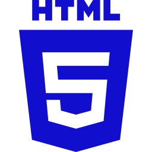

Olá, sou Diego Hugo Desenvolvedor Web
Sou um entusiasta de tecnologia apaixonado por desenvolvimento web. Estou sempre em busca de aprender novas tecnologias e criar soluções inovadoras.
Sobre Mim
Minha apreciação pela informática vai além do simples entendimento técnico. Enxergo a tecnologia como uma ferramenta poderosa que impulsiona a inovação, transformando a maneira como vivemos e trabalhamos. Minha trajetória começou na instituição Senac Minas em 2022, quando iniciei o curso de técnico em informática, o qual aguçou ainda mais minha curiosidade e interesse pela área. Acredito fervorosamente que a Tecnologia da Informação vai além de sua função convencional. É uma força transformadora que, quando utilizada com sabedoria, pode criar soluções inteligentes capazes de resolver não apenas problemas pontuais, mas também gerar um impacto positivo e duradouro na sociedade. Para mim, a informática é a ponte entre a imaginação e a realização, uma ferramenta que pode moldar um futuro mais eficiente, inclusivo e sustentável.
MINHAS HABILIDADES.
HTML
CSS

JavaScript
PHP
Java